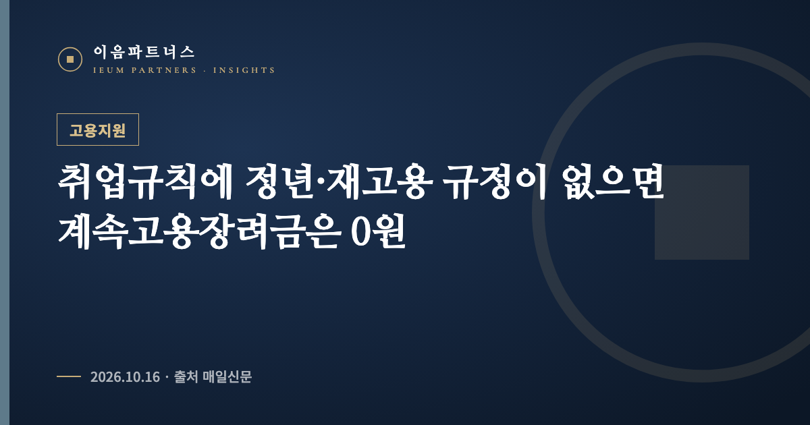

취업규칙에 정년·재고용 규정이 없으면 계속고용장려금은 0원

정년이 지난 직원이 회사에 남으면 나라에서 매달 돈을 준다고 알고 계신 분이 많습니다. 그런데 고령자 계속고용장려금은 근로자가 아니라 회사가 받는 지원금이고, 회사가 취업규칙을 미리 갖춰 두지 않았다면 아예 받을 수 없습니다. 매일신문은 이를 두고 “돈은 근로자 통장이 아니라 회사 통장으로 간다”고 짚었습니다(매일신문). 이 글에서는 장려금의 금액과 요건, 특히 취업규칙에서 먼저 확인할 점을 정리합니다.
정년을 앞둔 숙련 직원을 계속 쓰고 싶은 회사라면, 그 직원의 정년이 오기 전에 규정부터 손봐야 합니다. 우리 회사 취업규칙에 무엇이 빠져 있는지 궁금하다면 카카오톡 채널 이음파트너스에서 함께 확인해 볼 수 있습니다.
얼마를, 누가 받나
이 장려금은 정년이 지난 직원을 재고용하거나, 정년을 늘리거나, 아예 없앤 중소·중견기업에 주는 돈입니다. 2026년부터는 처음으로 지역에 따라 금액이 달라져, 비수도권은 근로자 1인당 월 40만 원, 서울·인천·경기는 월 30만 원입니다.
| 구분 | 내용 |
|---|---|
| 지원 금액 | 1인당 월 40만 원(비수도권), 월 30만 원(서울·인천·경기) |
| 지원 기간 | 근로자 1인당 최대 3년(2024년에 2년에서 늘어남), 분기마다 지급 |
| 3년 합계 | 비수도권 최대 1,440만 원, 수도권은 이보다 360만 원 적음 |
| 받는 쪽 | 사업주(근로자 임금에 자동으로 얹히지 않음) |
| 인원 상한 | 피보험자의 30%와 30명 가운데 적은 쪽, 10명 미만 사업장은 3명 |
왜 취업규칙이 첫 관문일까
계속고용제도는 정년제도를 1년 이상 운영해 온 사업장만 도입한 것으로 인정받습니다. 고용노동부가 공개한 사례를 보면, 취업규칙에 정년 규정이 없던 한 제조업체는 장려금을 받으려고 뒤늦게 정년을 60세로 정하고 직원을 재고용했다가 전액 지급하지 않는다는 판정을 받았습니다.
재고용 방식에는 시한도 있습니다. 정년에 이른 다음 날부터 6개월 안에 1년 이상 근로계약을 맺어야 하고, 그보다 짧은 계약은 지원에서 빠집니다. 정년 연장이나 재고용은 법적 의무가 아니라 회사가 선택하는 제도이지만, 선택한다면 규정과 계약을 요건에 맞게 갖춰야 합니다.
다른 요건도 함께 보세요
사업장의 60세 이상 고용보험 가입자 비율이 30%를 넘으면 대상이 아닙니다. 그 회사에서 고용보험 가입 기간이 2년이 안 되거나 월 보수가 115만 원에 못 미치는 근로자도 제외되고, 2026년 6월부터는 상습 임금체불 사업주가 대상에서 빠졌습니다.
신청은 회사가 직접 하고, 지원 여부와 금액은 고용노동부(고용센터) 심사로 정해집니다. 요건 하나라도 빠지면 지급되지 않을 수 있으니, 신청 전에 고용24 안내와 관할 고용센터 상담으로 확인하시길 권합니다.
대표님이 지금 확인할 것
- 취업규칙에 정년 규정이 있고, 그 규정을 1년 이상 운영해 왔는지
- 정년 연장·폐지·재고용 가운데 어떤 방식을 쓸지, 취업규칙 개정 절차를 노무사와 확인했는지
- 재고용한다면 정년 다음 날부터 6개월 안에 1년 이상 계약을 맺는지
- 60세 이상 직원 비율과 대상 직원의 고용보험 가입 기간·월 보수를 확인했는지
참고한 자료
- 고령자 계속고용장려금 지방 40만원·수도권 30만원, 받는 쪽은 근로자 아닌 회사다 — 매일신문 (2026.10.18)
정년이 다가오는 직원이 있어 취업규칙을 점검해 보고 싶다면 카카오톡 채널 이음파트너스로 편하게 물어봐 주세요.
※ 이 글은 일반적인 정보 제공을 위한 것으로, 개별 사안은 세무사·노무사 등 전문가와 함께 확인하시기 바랍니다.